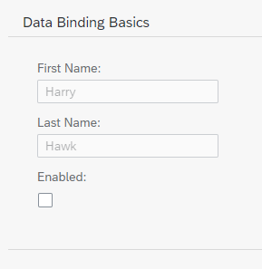

Step 4: Two-Way Data Binding
Step 4: Two-Way Data Binding
Preview

Coding
You can view and download all files in the Demo Kit at Data Binding - Step 4.
webapp/view/App.view.xml (New)
<mvc:View
xmlns="sap.m"
xmlns:form="sap.ui.layout.form"
xmlns:mvc="sap.ui.core.mvc">
<Panel headerText="{/panelHeaderText}" class="sapUiResponsiveMargin" width="auto">
<form:SimpleForm editable="true" layout="ColumnLayout">
<Label text="First Name"/>
<Input value="{/firstName}" valueLiveUpdate="true" width="200px" enabled="{/enabled}"/>
<Label text="Last Name"/>
<Input value="{/lastName}" valueLiveUpdate="true" width="200px" enabled="{/enabled}"/>
<Label text="Enabled"/>
<CheckBox selected="{/enabled}"/>
</form:SimpleForm>
</Panel>
</mvc:View>We create a new view folder in our app and a new file for our XML view inside
the app folder.
webapp/index.js
sap.ui.require([
"sap/ui/model/json/JSONModel",
"sap/ui/core/mvc/XMLView"
], function (JSONModel, XMLView) {
"use strict";
// Attach an anonymous function to the SAPUI5 'init' event
sap.ui.getCore().attachInit(function () {
// Create a JSON model from an object literal
var oModel = new JSONModel({
firstName: "Harry",
lastName: "Hawk",
enabled: true,
panelHeaderText: "Data Binding Basics"
});
// Assign the model object to the SAPUI5 core
sap.ui.getCore().setModel(oModel);
// Display the XML view called "App"
new XMLView({
viewName: "sap.ui.demo.db.view.App"
}).placeAt("content");
});
});We
delete the code that assigned the sap.m.Text field to the UI and add an XML view that is identified by its resource
name.
You can now refresh the application preview and select or deselect the checkbox. You will see that the input fields are automatically enabled or disabled in response to the state of the checkbox.
It is
clear that we have not written any code to transfer data between the user interface and the model, yet the Input
controls are enabled or disabled according to the state of the checkbox. This behavior is the result of the fact that OData models and
JSON models implement two-way data binding, and that for JSON Models two-way binding is the default behavior. For more information,
see Binding Modes.
Two things are happening here:
-
Data binding allows the property of a control to derive its value from any suitable property in a model.
-
SAPUI5 automatically handles the transport of data both from the model to the controls, and back from the controls to the model. This is called two-way binding.
Parent topic: Data Binding
Previous: Step 3: Create Property Binding